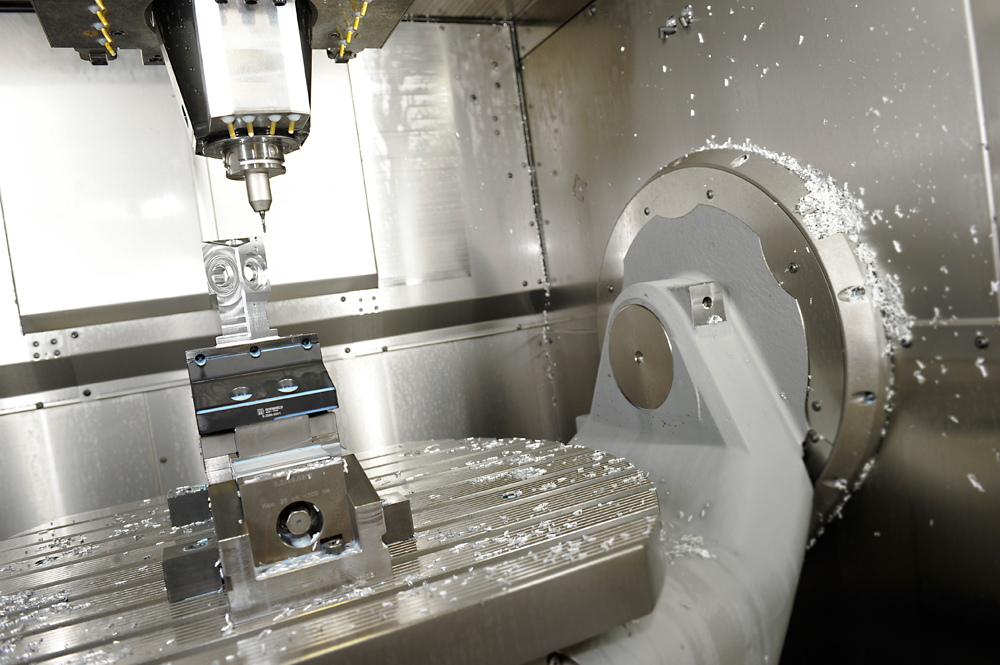
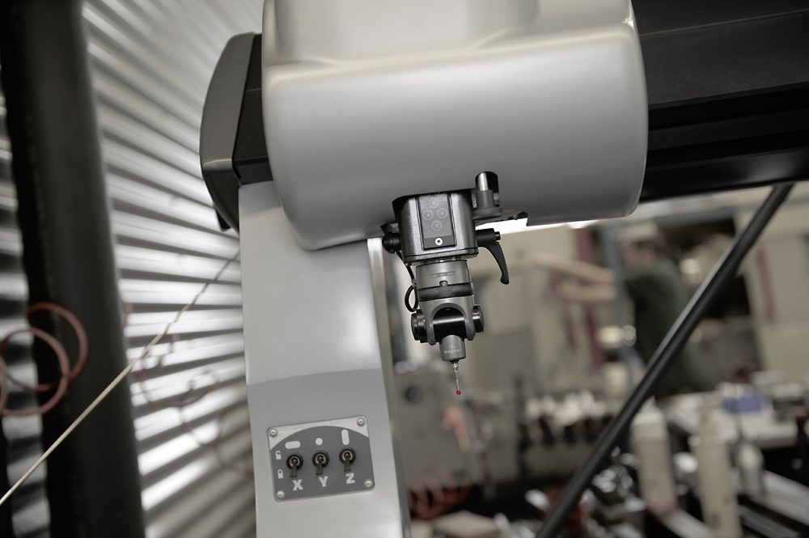

Fräsen steht bei uns im Vordergrund – auf einer modernen 5-Achs-Fräsmaschine, teilautomatisiert und ausgelegt auf große Bauteile bei feinen Toleranzen.

Mit der 5-Achs-Simultanbearbeitung fertigen wir komplexe Geometrien in einer Aufspannung – das reduziert Rüstzeiten, vermeidet Umspannfehler und sorgt für höchste Wiederholgenauigkeit.
| Bauart | 5-Achs-Fräsmaschine (Simultan) |
|---|---|
| Fräsweg X | 0 – 1.400 mm |
| Fräsweg Y | bis 800 mm |
| Fräsweg Z | bis 650 mm |
| Automatisierung | teilautomatisiert (Werkstück-/Palettenhandling) |
| Ideale Losgröße | 10 – 50 Stück |
Weitere Achsdaten und Werkstückgrößen stimmen wir gerne projektbezogen mit Ihnen ab.
Fräsweg in X
Verfahrweg in Y
Verfahrweg in Z

Ein Teil unserer Fräsfertigung ist automatisiert. Das ermöglicht mannarme Schichten, kürzere Durchlaufzeiten und gleichbleibende Qualität – besonders wirtschaftlich bei wiederkehrenden Losgrößen von 10 bis 50 Stück.
Für die Automatisierung setzen wir auf bewährte Technik von Lang Technik (Robo-Trex) →
Senden Sie uns Ihre Zeichnung – wir prüfen Machbarkeit, Aufspannung und Automatisierbarkeit.
Machbarkeit anfragen